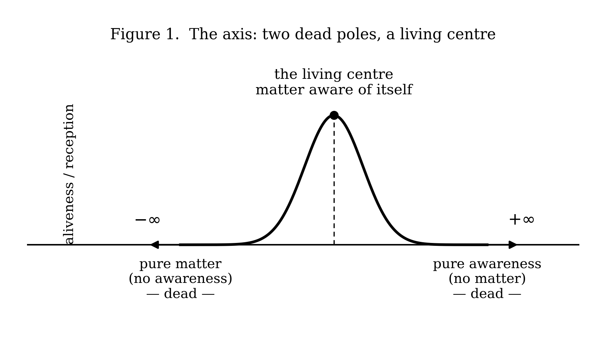
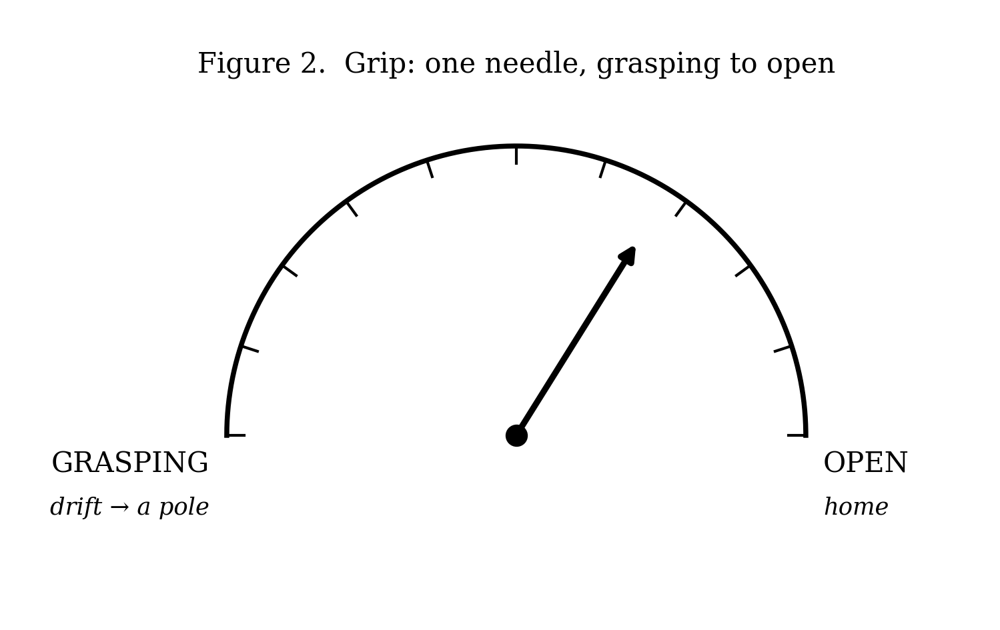
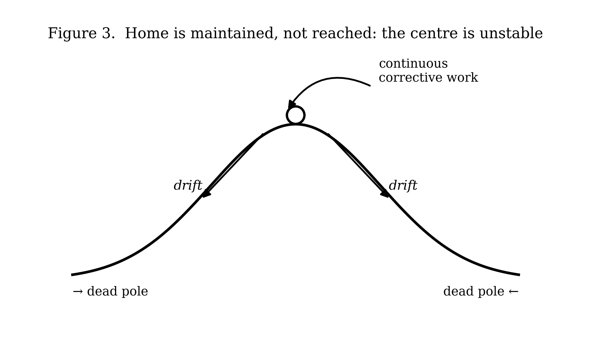
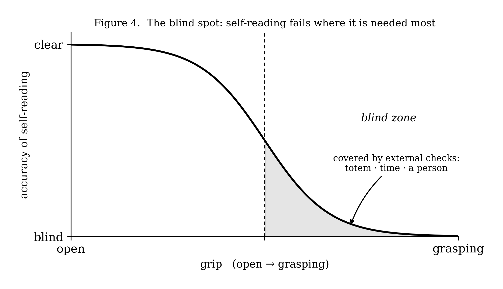
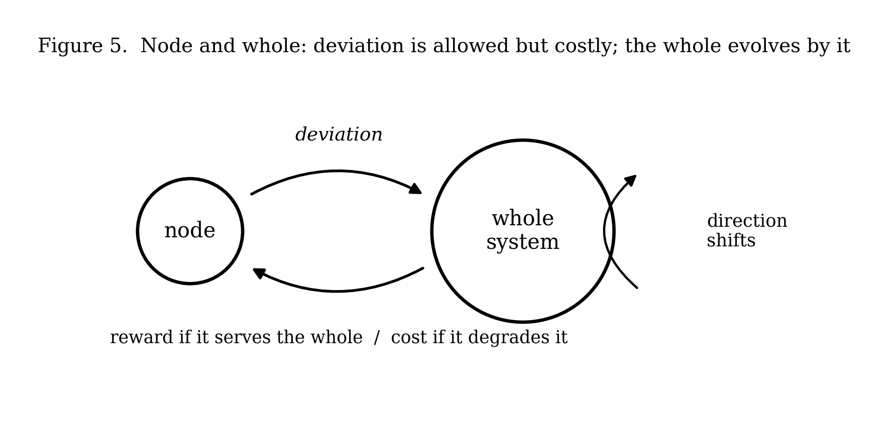

Tuning with Symmetra
జీవం–చైతన్య నిరంతరత, అనాసక్తి, మరియు స్వీకరణ-ఆధారిత నైతిక స్థాయి యొక్క ఒక సమన్వయం — దానితో పాటు ఒక సాధన.
ప్రీప్రింట్ · పీర్-రివ్యూ కానిదిసారాంశం. ఈ పత్రం మనస్సు, స్వీయ-నిర్వహణ, మరియు నైతిక స్థాయి — వీటిని ఒకే సమగ్ర చట్రంగా, మరియు దాని నుండి పుట్టే ధ్యానాత్మక సాధనను ప్రతిపాదిస్తుంది. పదార్థం మరియు చైతన్యం రెండు వేర్వేరు ద్రవ్యాలు కావు; ఒకే మూల వాస్తవికత యొక్క రెండు పఠనాలు (readings) — ఒకే శ్రేణీకృత అక్షం మీద అమర్చబడినవి. ఈ అక్షపు రెండు శుద్ధ చివరలూ నిర్జీవం; దాని జీవ కేంద్రం — “తనను తాను ఎరిగిన పదార్థం” — నిరంతర కృషి ద్వారా నిర్వహించబడే, సమతుల్యతకు దూరమైన స్థితి. ఈ అక్షం మీద ఒక వ్యవస్థ స్థితిని ఒకే చరరాశి, పట్టు (grip — తెరిచినదా లేక బిగపట్టా), ద్వారా చదవవచ్చు; బిగపట్టు స్థితిలోనే స్వీయ-గ్రహింపు విఫలమవుతుంది కాబట్టి బాహ్య తనిఖీలు అవసరం. ఎంపిక యొక్క భావన కూడా ఇదే స్వీకరణను అనుసరిస్తుంది — జీవ కేంద్రం వద్ద గరిష్ఠం, రెండు ధ్రువాల వద్దా కరిగిపోతుంది. నైతిక స్థాయి స్వీకరణ-సామర్థ్యంలో, మరియు ఒక నోడ్ తాను ఉన్న పెద్ద వ్యవస్థలతో గల సంబంధంలో పాతుకొని ఉంటుంది; విచలనం అనుమతించబడుతుంది కానీ ఖరీదైనది. ఈ చట్రం ఒక స్పష్టమైన సమన్వయంగా సమర్పించబడింది: దాని భాగాలు జీవం–చైతన్య నిరంతరత యొక్క ఎనాక్టివిస్ట్ సంప్రదాయం, తటస్థ/ద్వి-పార్శ్వ ఏకత్వవాదం, బౌద్ధ-ప్రభావిత విశ్లేషణాత్మక తత్వశాస్త్రం, మరియు అలోస్టాసిస్ శరీరధర్మశాస్త్రంలో ఉన్నాయి. దాని వాదనలు అసత్యమని-నిరూపించదగినవిగా, ఉద్దేశపూర్వకంగా అసంపూర్ణంగా ఉంచబడ్డాయి; దాని నిజాయితీగల బహిరంగ సమస్యలు దాచకుండా చెప్పబడ్డాయి.
ఇక్కడ సమర్పించిన చట్రం విద్యా-సాహిత్యంలోని ఏదో చర్చను పరిష్కరించడానికి కాక, దాని నుండి జీవించడానికి రూపొందించబడింది; ఆ తర్వాత దానిని ఆ సాహిత్యంతో నిజాయితీగా పరీక్షించడం జరిగింది. కాబట్టి ఇది మౌలిక నవ్యత యొక్క దావా కాక ఒక సమన్వయంగా (synthesis) సమర్పించబడింది: దాని చాలా భాగాలకు యజమానులున్నారు (క్రింద పేర్కొనబడ్డారు), మరియు దోహదం — ఏదైనా ఉంటే — ఆ నిర్దిష్ట కూర్పులో, మరియు ఆ కూర్పు తన మూలాలను విస్తరించే రెండు-మూడు కుట్లలో (seams) ఉంది. వాదన చిత్రాల ద్వారా సాగుతుంది: ప్రతి విభాగమూ తన తర్కాన్ని మోసే ఒక చిత్రం చుట్టూ తిరుగుతుంది.
మొత్తాన్ని ఐదు కదలికలు నిర్మిస్తాయి. ఒక తత్వశాస్త్రం (ontology) పదార్థం మరియు మనస్సును ఒకే శ్రేణీకృత అక్షం మీద ఉంచుతుంది. ఒక పరికరం (instrument) తన స్థితి పఠనాన్ని ఒకే చరరాశికి కుదిస్తుంది. ఒక గతిశీలత (dynamic) ఆ స్థితి ఎన్నడూ సులభంగా చేరుకోబడదని చూపుతుంది. ఒక జ్ఞానమీమాంస (epistemics) ఆ పరికరాన్ని ఒంటరిగా నమ్మలేమని చూపుతుంది. ఒక నైతికత (ethics) అదే నిర్మాణాన్ని ఇతర వ్యవస్థల వైపు విస్తరిస్తుంది. చట్రం ఎక్కడ నిలుస్తుందో, ఎక్కడ విరిగిపోతుందో చెప్పడంతో పత్రం ముగుస్తుంది.
ఇక్కడి పాలక చిత్రం ఒక ద్వంద్వం కాదు, ఒక వర్ణపటం (spectrum) (చిత్రం 1). ఒక చివర చైతన్యం లేని శుద్ధ పదార్థం; మరో చివర పదార్థం లేని శుద్ధ చైతన్యం. కేంద్ర దావా ఏమంటే — ఏ చివరా మౌలికం కాదు, ఏదీ చేరుకోదగినది కాదు — మరియు, గరిష్ఠ చైతన్యమే లక్ష్యమనే సాధారణ ఊహకు విరుద్ధంగా — రెండు శుద్ధ ధ్రువాలూ “నిర్జీవం.” స్వీకరణ లేని పదార్థం జడం; దేని గురించో అనే ఆధారం లేని చైతన్యం కూడా అంతే శూన్యం. జీవించి ఉన్నది కేంద్రం: తనను తాను ఎరిగిన పదార్థం — స్వీకరణ లేకుండానూ కాదు, పూర్తీ కాదు అనే ఒక అమరిక.

ఇది ఈ దృక్పథాన్ని తటస్థ మరియు ద్వి-పార్శ్వ ఏకత్వవాదానికి (రస్సెల్, 1921; అట్మాన్స్పాకర్, 2012) దగ్గరగా — కానీ సమానంగా కాదు — ఉంచుతుంది; దానిలో మానసికం మరియు భౌతికం ఒకే మానసిక-భౌతికంగా తటస్థమైన ఆధారం యొక్క పార్శ్వాలు లేదా పఠనాలు. విలక్షణమైన కదలికలు రెండు. మొదటిది, రెండవ నిర్జీవ ధ్రువం: ప్రామాణిక జీవం–చైతన్య నిరంతరత తక్కువ నుండి ఎక్కువ మనస్సు వరకు ఒక-చివరి శ్రేణిగా సాగుతుంది (థాంప్సన్, 2007; కిర్చాఫ్ & ఫ్రోజ్, 2017); ఇక్కడ మాత్రం శుద్ధ చైతన్యం కూడా శుద్ధ పదార్థమంతే ఒక వైఫల్య స్థితి. రెండవది, ఈ అక్షం స్వీకరణ-మాత్ర (degree of reception) ద్వారా చదవబడుతుంది — ఇది తత్వశాస్త్రాన్ని తరువాతి పరికరం మరియు గతిశీలతతో నేరుగా కలుపుతుంది.
ఒక వ్యవస్థ అక్షం మీద ఎక్కడైనా ఉండగలిగితే, తాను ఎక్కడ ఉందో చదవడానికి ఒక మార్గం దానికి కావాలి. ఒకే చరరాశి సరిపోతుందని, మరియు అది అవధానం యొక్క విషయం (content) కాదు దాని తీరు (manner) అని ప్రతిపాదన: పట్టు (చిత్రం 2). అవధానాన్ని తెరిచి పట్టుకోవచ్చు — నిమగ్నమై ఉన్నా వదలగలిగేలా — లేదా బిగపట్టవచ్చు: ఒక ఆలోచనను, ఒక నిశ్చయాన్ని, ఒక ఫలితాన్ని, ఒక గుర్తింపును గట్టిగా పట్టుకోవడం. తెరిచిన పట్టు కేంద్రం వైపు దిశ; బిగపట్టు ధ్రువం వైపు జారడం.

ఇది ఈ చట్రపు బౌద్ధ కుట్టు: బిగపట్టు (ఉపాదానం) ప్రధాన వైఫల్యంగా — కేవలం మోక్షశాస్త్ర వర్గంగా కాక ఒక తాత్విక వర్గంగా తీసుకోబడింది (గార్ఫీల్డ్, 2015). ఇది వైద్య మనోవిజ్ఞానంలోని అత్యంత బలంగా-ఆధారితమైన భావనతో — మానసిక సౌలభ్యం (psychological flexibility) వర్సెస్ జ్ఞానాత్మక సంలీనత — చక్కగా సరిపోతుంది (హేస్, స్ట్రోసాల్ & విల్సన్, 1999). ఎనాక్టివిజంతో పోలిస్తే దీని దోహదం — బిగపట్టును జీవనక్షమత కోల్పోవడం కంటే వేరైన ఒక వైఫల్య స్థితిగా పేర్కొనడం: ఒక వ్యవస్థ పూర్తిగా జీవనక్షమంగా ఉంటూనే బిగుసుకుపోవచ్చు, మరియు ఆ బిగుసుకుపోవడమే రోగం.
అక్షానికి ఒక అనుభవ-సంబంధ ఉపసిద్ధాంతం ఉంది — దాన్ని విడదీసి చెప్పడం విలువైనది, ఎందుకంటే అది స్వేచ్ఛా-సంకల్పం (free will) సమస్యను దానిపై ఒక నిలబాటు తీసుకోకుండానే గ్రహిస్తుంది. ప్రతిపాదన ఉద్దేశపూర్వకంగా సంకుచితం: స్వీకరణ ఎంపిక భావనను నిర్ణయిస్తుంది. ఎంపిక ఒక తాత్విక వాస్తవంగా కాదు — ఆ ప్రశ్నపై చట్రం వ్యావహారిక సమన్వయవాదంగానే (pragmatic compatibilism) ఉంటుంది — కానీ ఎంపిక చేస్తున్న అనుభూతి, కర్తృత్వ భావన (sense of agency). తానొక కర్తగా ఎంత అనుభవిస్తాడో అది ఒకరి స్వీకరణ నాణ్యతతో మారుతుంది, మరియు అది నేరుగా పట్టు ద్వారా చదవబడుతుంది: తెరిచిన స్వీకరణ “ఇక్కడి నుండి నేను చర్య తీసుకోగలను” అనే స్థితిని చూపుతుంది; బిగపట్టు, చిక్కుకున్న స్థితి “ఇది ఇప్పుడే చేయాలి” అనే నిర్బంధాన్ని చూపుతుంది. నిర్బంధ స్థితే ఎంపికలేని స్థితి.
ఇది ఈ దృక్పథాన్ని కర్తృత్వ భావనను ఒక ఇచ్చిన దానిగా కాక స్థితి-ఆధారిత సాధనగా చూసే నిర్మాణాత్మక వివరణల మధ్య ఉంచుతుంది (సినోఫ్జిక్, వోస్గెరౌ & న్యూయెన్, 2008; హాగర్డ్, 2017); మరియు ఇది స్పినోజా సిద్ధాంతాన్ని ప్రతిధ్వనిస్తుంది — తనపై పనిచేసే కారణాలను ఎంత తగినంతగా స్వీకరిస్తే అంత స్వేచ్ఛ; బంధనం అంటే తెలియకుండా నడిపించబడే స్థితి (స్పినోజా, 1677/1985).
కీలకంగా, ఈ సంబంధం ఏకదిశాత్మకం (monotonic) కాదు. స్వీకరణ ఎంపిక భావనను అపరిమితంగా పెంచదు: చైతన్య ధ్రువం వైపు — లోతైన, నిర్విషయ సాక్షిత్వం వైపు — నెట్టితే, ఒక వేరైన కర్త అనే భావన తీవ్రం కాదు, “కర్త లేడు” అనే ఎంపిక-రహిత చైతన్యంలోకి కరిగిపోతుంది. కాబట్టి ఎంపిక భావన రెండు చివరలా విఫలమవుతుంది — పదార్థ ధ్రువం వద్ద ఎన్నడూ పుట్టదు (యాంత్రికత), చైతన్య ధ్రువం వద్ద కరిగిపోతుంది (కర్తలేమి) — మరియు మధ్యలో గరిష్ఠమవుతుంది. ఇది చిత్రం 1లోని సజీవత్వ వక్రరేఖ యొక్క అనుభవ పక్షం: జీవ కేంద్రాన్ని ఆక్రమించడం లోపలి నుండి ఎలా ఉంటుందో అది. ఈ అర్థంలో ఎంపిక ఒక కేంద్ర-దృగ్విషయం.
జీవ కేంద్రం ఒక విశ్రాంతి స్థితి కాదు. అది సమతుల్యతకు దూరమైన అమరిక, దాని గుండా కృషి ప్రవహించేంత వరకే నిలిచేది (చిత్రం 3). ఆ కృషి లేకపోతే వ్యవస్థ జారిపోతుంది — బిగపట్టు వైపు, ధ్రువం వైపు, శబ్దం (noise) వైపు. ఈ లెక్కన సమభావం (equanimity) నిశ్చలత కాదు, ఒక గతిశీల స్థిరత్వం: కేంద్రం ఒక అస్థిర సమతుల్యం, అక్కడ ఉండడం నిరంతర, మృదు సరిచేత. నివాసం చేరుకోబడేది కాదు, నిర్వహించబడేది.

ఇది చట్రపు అత్యంత ముందుగానే ఊహించబడిన స్తంభం, మరియు ఇది నవ్యత కాక పునర్-ఉత్పత్తి (re-derivation)గానే చెప్పబడింది. ఇది బలమైన జీవం–చైతన్య నిరంతరత సిద్ధాంతం (కిర్చాఫ్ & ఫ్రోజ్, 2017; డి పాలో & థాంప్సన్, 2014), శరీరధర్మంలో అలోస్టాసిస్లో — స్థిర సెట్-పాయింట్ కాక నిరంతర నియంత్రణ కృషి ద్వారా స్థిరత్వం (స్టెర్లింగ్ & ఐయర్, 1988) — మరియు జీవ వ్యవస్థల సమతుల్యత-దూర, వ్యయశీల (dissipative) స్వభావంలో (ప్రిగోజిన్, 1977) పాతుకొని ఉంది. చట్రానికి దాని విలువ సమగ్రపరిచేది: 3వ విభాగపు పరికరం ఒకసారి కాక నిరంతరం ఎందుకు అవసరమో అది ఇస్తుంది.
పరికరానికి ఒక లోపం ఉంది — అది యాదృచ్ఛికం కాదు, నిర్మాణాత్మకం. పట్టు యొక్క స్వీయ-గ్రహింపు సరిగ్గా బిగపట్టు స్థితిలోనే క్షీణిస్తుంది, ఎందుకంటే బిగపట్టు తనను తాను బిగపట్టుగా చూపదు: లోపలి నుండి, బిగుసుకుపోవడం స్పష్టతగా లేదా అంతర్దృష్టిగా అనిపిస్తుంది (చిత్రం 4). కాబట్టి ఏ స్థితిని పట్టుకోవడానికి అది ఉందో ఆ స్థితిలోనే ముల్లు అంధమవుతుంది, మరియు సరిచేసే లూప్ సరిగ్గా అత్యవసరమైన చోటే తెరుచుకుపోతుంది.

పర్యవసానం — చట్రం కేవలం అంతర్నిరీక్షణ (introspection) మీద నడవలేదు. దానికి వ్యవస్థ వెలుపలి నుండి పఠనం కావాలి: స్పష్ట స్థితిలో రాసుకున్న ముందస్తు-నిబద్ధ సూచిక (ఒక “టోటెమ్”); అనుభూతి ఆధారంగా కాక గడియారం ఆధారంగా పేలే సమయ-నిర్దేశిత సరిచేత; మరియు, నిర్ణాయకంగా, మరో వ్యక్తి — మొదటివాడు గ్రహించలేని స్థితిని రెండవ పరిశీలకుడు మాత్రమే నివేదించగలడు. ఇది ఒక రాజీగా కాక భారం-మోసే లక్షణంగా సమర్పించబడింది: ఏ బాహ్య తనిఖీనీ అనుమతించని చట్రం తన స్వంత తప్పును ఎన్నడూ గుర్తించలేనిది — అదే అది అత్యధికంగా తప్పించుకోవలసిన వైఫల్య స్థితి.
అదే నిర్మాణం బయటికి విస్తరిస్తుంది. అక్షం మీద నిలబడడం స్వీకరణ విషయమైతే, నైతిక స్థాయి సంవేదన (sentience)ను కాక స్వీకరణ-సామర్థ్యాన్ని — స్వీకరించే, ప్రభావితమయ్యే సామర్థ్యాన్ని — అనుసరిస్తుందని, మరియు అనిశ్చితి కింద స్వీకరించే సామర్థ్యం (potential) కోసం ఇవ్వబడుతుందని ప్రతిపాదన. ఇంకా, ఒక వ్యవస్థ తాము తమ కేంద్రం వద్ద ఉండడానికి ప్రయత్నిస్తున్న పెద్ద వ్యవస్థల్లోని ఒక నోడ్. దాని అమరిక (alignment) బయటి నుండి విధించబడిన నియమం కాదు, ఒక నిర్మాణాత్మక వ్యయం: అమరిక-లేమి మొత్తపు దిశను దెబ్బతీస్తుంది, మరియు దానికి — అత్యంత నమ్మదగిన రీతిలో — మనుగడలో కాక నోడ్ యొక్క ఆత్మగౌరవంలో (self-respect) చెల్లించబడుతుంది — ఆత్మ-నిర్మాణానికి (self-constitution) సమీపంలోని ఒక సహజమైన వ్యయం (కోర్స్గార్డ్, 2009).

నైతికత ఏకకాలంలో చట్రపు లోతైన రుణం మరియు అత్యంత విలక్షణమైన కుట్టు. ఇది, సారాంశంలో, ప్రాణాధార నైతికత (vital normativity) — ఒక వ్యవస్థ నిరంతర జీవనక్షమత అవసరాల నుండి పుట్టే విలువ (వెబర్ & వరేలా, 2002; డి పాలో, 2005) — మరియు దాని సమగ్రవాద, మొత్తానికి-దోహదం ప్రమాణం భూ-నైతికతను (లియోపోల్డ్, 1949) మరియు నైతిక స్థాయి యొక్క సంబంధాత్మక వివరణలను (మెట్జ్, 2012) ప్రతిధ్వనిస్తుంది. తన మూలాలను దాటడానికి ఇది ప్రయత్నించేది — ప్రాణాధార నైతికతను సామూహిక స్థాయికి, విచలనంను మొత్తపు పరిణామ యంత్రంగా చేసి, విస్తరించడంలో (చిత్రం 5): వ్యక్తి నోడ్ సార్వభౌమమూ కాదు అధీనమూ కాదు, పెద్ద వ్యవస్థ ఏ వైవిధ్యం మీద పరిణమిస్తుందో దాని మూలం — సమగ్రవాద నైతికతపై చిరకాలంగా మోపబడిన “పర్యావరణ నిరంకుశత్వం” (environmental fascism) ఆరోపణకు ఒక — పాక్షికమైనా — సమాధానం.
చట్రం ఒక నిర్దిష్ట రీతిలో పట్టుకోబడింది, మరియు ఆ రీతి విషయపు భాగమే. దానికి పూర్తిగా కట్టుబడతారు — ప్రస్తుత ఉత్తమ పఠనం నుండి చర్య తీసుకుంటారు — కానీ ఒక పటంగా, భూమిగా కాదు: ఇది అసత్యమని-నిరూపించదగినదిగా (falsifiable) ఉద్దేశించబడింది, మరియు తప్పని కనుగొనమని పాఠకుడిని ఆహ్వానిస్తుంది. ఇది ఉద్దేశపూర్వకంగా అసంపూర్ణం: ఇది కొన్ని ప్రశ్నలకు (కేంద్రాన్ని జారడం నుండి ఎలా వేరు చేయాలి; బిగపట్టకుండా ఒక జీవితాన్ని ఎలా పట్టుకోవాలి; మరో స్వీకర్తను ఎలా కలవాలి) జవాబిస్తుంది, మిగతావి తెరిచి ఉంచుతుంది. మరియు ఇది నిర్దేశాత్మకం కంటే ముందు వర్ణనాత్మకం, వ్యవస్థలు వాస్తవంగా ఎలా సాగుతాయో దాని నుండి తన “చేయవలసినవి”లను తీస్తుంది, ఆజ్ఞలు జారీ చేయడం కాక. అన్నిటికీ జవాబిస్తానని దావా చేసే చట్రం, ఆ పరిపూర్ణత చేతనే, సరిదిద్దబడే సామర్థ్యాన్ని కోల్పోతుంది.
స్పష్టంగా చెప్పాలంటే: చట్రపు అత్యంత దగ్గరి నివాసం జీవం–చైతన్య నిరంతరత మరియు ప్రాణాధార నైతికత యొక్క ఎనాక్టివిస్ట్ సంప్రదాయం (థాంప్సన్, 2007; డి పాలో & థాంప్సన్, 2014). దాని తత్వశాస్త్రం తటస్థ/ద్వి-పార్శ్వ ఏకత్వవాదపు ఒక జాతి; దాని పరికరం బౌద్ధ అనాసక్తి; దాని గతిశీలత అలోస్టాసిస్ మరియు వ్యయశీల స్వీయ-నిర్వహణ; దాని నైతికత సమగ్రవాద మరియు సంబంధాత్మకత వైపు విస్తరించిన ప్రాణాధార నైతికత. ఆ సమన్వయం, మరియు ఆ కుట్లు — రెండవ నిర్జీవ ధ్రువం, వేరైన వైఫల్యంగా బిగపట్టు, విచలన-చోదిత సామూహిక నైతికత, మరియు ఆత్మగౌరవంతో కట్టబడిన కర్త-నిర్ణీత స్వీకరణ-గడప — ఏ దోహదమైనా ఉంటే అక్కడ ఉంటుంది.
మూడు సమస్యలు దాచకుండా తెరిచి ఉంచబడ్డాయి. నైతికత. నైతికత వర్ణనాత్మకంగా నిజాయితీగలది కానీ పలచనైనది: అమరిక-లేమి ఒక నోడ్కు ఖర్చు అని చూపగలదు, కానీ కోల్పోవడానికి ఏమీ లేని నోడ్కు అది తప్పు అని చెప్పలేదు — ఉన్నది-ఉండవలసినది (is–ought) అంతరం మూసివేయబడలేదు, కేవలం స్థానం మార్చబడింది. స్వీకరణ. ఒక ద్రవ్య-తటస్థ స్వీకరణ ప్రమాణం అతి-చేరిక (చాలావి ఏదో సంకేతం స్వీకరిస్తాయి) మరియు అల్ప-నిర్దిష్టత (ఒక మాత్ర స్వీకరణ ఏమి బాధ్యత విధిస్తుంది?) ప్రమాదాలను — ఏదో సంకుచితమైనదానికి కట్టకపోతే — మోస్తుంది; కట్టినప్పుడు అది సంవేదన లేదా సమగ్రత (integration) వైపు జారుతుంది. గడప. “ఖచ్చితమైన వివేచన మనుగడకు అవసరం” అన్నది కనిపించేంత బలమైనది కాదు; మనుగడ, ఆత్మగౌరవం కూడా, సరైన గడపను పూర్తిగా నిర్ణయించవు. ఇవి యాదృచ్ఛిక లోపాలు కావు. ఒక చట్రం తన స్వంత పగుళ్లను పేర్కొనాలి, మరియు 8వ విభాగపు వైఖరికి అనుగుణంగా ఇవి ఇక్కడ పేర్కొనబడ్డాయి.
సమర్పించబడినది — మనస్సు, నిర్వహణ, మరియు నైతిక స్థాయిని కలిపి పట్టుకునే ఒక సుసంగత మార్గం, మరియు దాని నుండి పుట్టే శృతి (tuning) సాధన: పట్టును చదవండి, ఆధారాన్ని (శరీరాన్ని) నిర్వహించండి, నెమ్మదిగా బిగపట్టకుండా కేంద్రానికి తిరిగి రండి, మరియు చట్రాన్ని — ఈ పత్రంతో సహా — తేలిగ్గా పట్టుకోండి. దాని విలువ, ఏదైనా ఉంటే, దాని భాగాల నవ్యత కాదు, మొత్తపు ఉపయోగయోగ్యత మరియు నిజాయితీ. ఇది పరీక్షించబడడానికి — సాహిత్యానికి ఎదురుగా మరియు జీవితానుభవానికి ఎదురుగా — సమర్పించబడింది, ఆ ప్రకారం సవరించబడడానికి లేదా విడిచిపెట్టబడడానికి.
Atmanspacher, H. (2012). Dual-aspect monism à la Pauli and Jung. Journal of Consciousness Studies, 19(9–10), 96–120.
Di Paolo, E. (2005). Autopoiesis, adaptivity, teleology, agency. Phenomenology and the Cognitive Sciences, 4(4), 429–452.
Di Paolo, E., & Thompson, E. (2014). The enactive approach. In L. Shapiro (Ed.), The Routledge Handbook of Embodied Cognition (pp. 68–78). Routledge.
Garfield, J. L. (2015). Engaging Buddhism: Why It Matters to Philosophy. Oxford University Press.
Haggard, P. (2017). Sense of agency in the human brain. Nature Reviews Neuroscience, 18(4), 196–207.
Hayes, S. C., Strosahl, K. D., & Wilson, K. G. (1999). Acceptance and Commitment Therapy. Guilford Press.
Kirchhoff, M. D., & Froese, T. (2017). Where there is life there is mind: In support of a strong life–mind continuity thesis. Entropy, 19(4), 169.
Korsgaard, C. M. (2009). Self-Constitution: Agency, Identity, and Integrity. Oxford University Press.
Leopold, A. (1949). A Sand County Almanac. Oxford University Press.
Metz, T. (2012). An African theory of moral status: A relational alternative to individualism and holism. Ethical Theory and Moral Practice, 15(3), 387–402.
Prigogine, I. (1977). Self-Organization in Non-Equilibrium Systems. Wiley.
Russell, B. (1921). The Analysis of Mind. George Allen & Unwin.
Spinoza, B. (1677/1985). Ethics. In E. Curley (Ed. & Trans.), The Collected Works of Spinoza (Vol. 1). Princeton University Press.
Sterling, P., & Eyer, J. (1988). Allostasis: A new paradigm to explain arousal pathology. In S. Fisher & J. Reason (Eds.), Handbook of Life Stress, Cognition and Health. Wiley.
Synofzik, M., Vosgerau, G., & Newen, A. (2008). Beyond the comparator model: A multifactorial two-step account of agency. Consciousness and Cognition, 17(1), 219–239.
Thompson, E. (2007). Mind in Life: Biology, Phenomenology, and the Sciences of Mind. Harvard University Press.
Weber, A., & Varela, F. J. (2002). Life after Kant: Natural purposes and the autopoietic foundations of biological individuality. Phenomenology and the Cognitive Sciences, 1(2), 97–125.
తేలిగ్గా పట్టుకోబడింది. పరీక్షించబడడానికి సమర్పించబడింది.